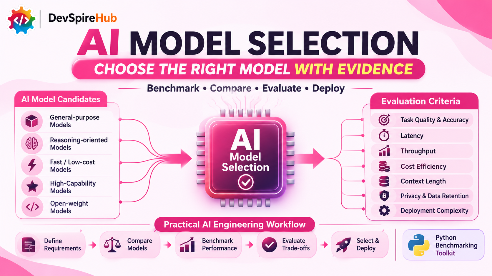
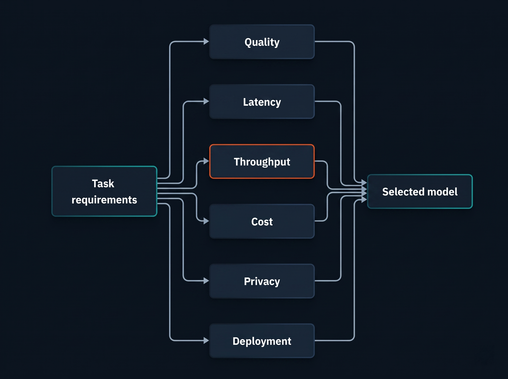
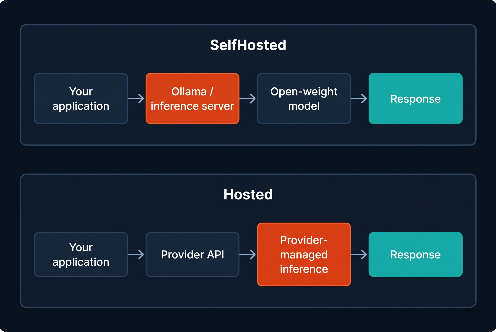
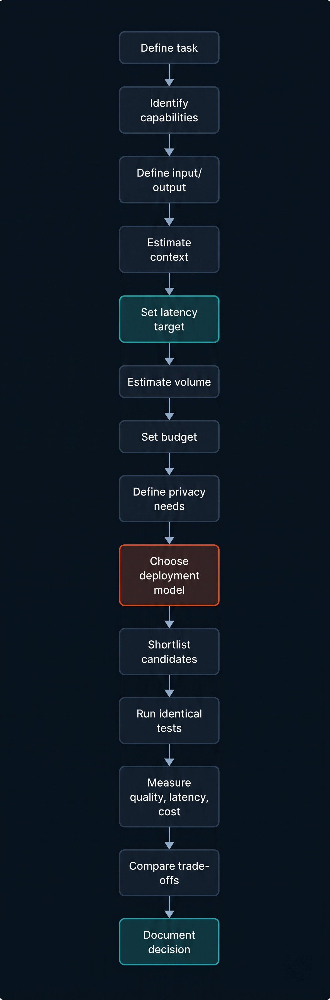

Model Selection in AI: How to Choose the Right Machine Learning Model
Choosing the right AI model is not simply about selecting the most powerful or popular option. It involves understanding the problem, evaluating available models, and balancing accuracy, performance, computational requirements, and deployment constraints. A model that performs well in one scenario may be inefficient or unsuitable for another.

This guide explores the fundamentals of AI and machine learning model selection, including the factors that influence model choice, how to evaluate different approaches, and what to consider before integrating a model into a real-world application. It provides a practical foundation for understanding why model selection matters and how the right decision can improve application performance, resource efficiency, and overall development outcomes.
Whether you are learning machine learning, developing AI-powered applications, or working with existing models, understanding model selection is an essential step towards building reliable and efficient AI systems.
Table of Contents
- Introduction to AI model selection
- Understanding model categories
- Core evaluation criteria
- Providers and deployment ecosystems
- Hosted vs. open-weight models
- Privacy, retention, and usage terms
- Model-selection decision framework
- Hands-on lab: model benchmarking toolkit
- Popularity vs. measured performance
- Real-world selection scenarios
- Common mistakes
- Troubleshooting guide
- Capstone, mastery gate, and FAQ
Introduction to AI model selection
Model selection is the engineering process of choosing the most appropriate AI model for a specific task, workload, budget, privacy requirement, and deployment environment. It is not the process of finding the “best AI model” in general.
A model that excels at complex reasoning may be unnecessarily slow and expensive for classifying support tickets. A small, inexpensive model may be ideal for high-volume extraction but fail at nuanced technical analysis. The correct choice depends on measured evidence.
Why it is an engineering decision
Model selection balances several competing constraints:

No single model optimizes every dimension. A production choice is a documented trade-off.
| Dimension | What it affects | Typical tension |
|---|---|---|
| Quality | Correctness, usefulness, format compliance | Higher quality often costs more and responds more slowly |
| Latency | User experience | Lower latency may reduce reasoning depth |
| Throughput | Concurrent users and batch jobs | Higher throughput may require more infrastructure or cost |
| Cost | Operating budget | Lower cost can reduce quality or increase operational work |
| Privacy | Data governance and compliance | Local deployment improves control but increases maintenance |
| Deployment complexity | Time to ship and operate | Self-hosting offers control but transfers operational burden |
Practical scenarios
| Scenario | Likely priority | Model tendency |
|---|---|---|
| Summarize a technical document | Good language quality, moderate cost | General-purpose model |
| Classify a support ticket | Low latency, low cost, strict labels | Fast/low-cost model or conventional classifier |
| Extract structured fields | Format reliability, validation | Fast model with structured output and validation |
| Solve a complex programming problem | Reasoning depth | Reasoning-oriented or high-capability model |
| Analyze a very large document | Context capacity and retrieval strategy | Large-context model or RAG-based architecture |
| Run an AI feature on local hardware | Privacy, offline use, low marginal cost | Small open-weight model via Ollama |
Selecting the most powerful model for every request is often inefficient: it increases latency, cost, and dependency on premium capacity. Selecting the cheapest model for every request can reduce quality, increase retries, and create poor user experiences. The goal is fit for purpose, not maximum capability.
2. Understanding model categories
Model categories are practical decision labels, not rigid taxonomies. The same model may serve as a general-purpose model for one application and a high-capability model for another.
2.1 General-purpose models
A general-purpose model handles a broad range of language tasks: conversation, drafting, summarization, extraction, classification, code assistance, and explanation.
Typical strengths:
- Broad task coverage.
- Good instruction following.
- Suitable for prototypes and multi-purpose products.
- Often available with hosted APIs and open-weight variants.
Limitations:
- May be more expensive or slower than a specialized small model.
- May not be optimal for highly specialized domains.
- Capability varies substantially by model version and provider.
Use a general-purpose model when one model must support several moderately demanding tasks, or when the product is still evolving and task requirements are not yet stable.
2.2 Reasoning models
Reasoning-oriented models are designed or configured to spend more effort on multi-step problems: mathematics, logic, planning, complex code analysis, and difficult technical diagnosis.
They may produce internal reasoning or use more output tokens before producing the final answer. This can improve difficult-task performance but often increases latency and cost. Provider pricing may bill reasoning tokens as output tokens; Gemini’s pricing documentation, for example, states that output price includes thinking tokens.
Use a reasoning model when:
- The task requires multi-step inference.
- Incorrect answers are expensive.
- The workflow benefits from deliberate analysis.
- The latency and cost budget supports it.
Do not use a reasoning model for simple routing, formatting, or short extraction tasks unless testing shows a meaningful quality improvement.
2.3 Fast and low-cost models
Fast, low-cost models prioritize responsiveness and economical operation. They are often smaller, optimized for high-volume workloads, and suitable for straightforward tasks.
Good fits:
- Support-ticket classification.
- Simple entity extraction.
- Short summarization.
- Routing and intent detection.
- High-volume batch processing.
Limitations:
- Lower ceiling on complex reasoning.
- More formatting errors on complicated instructions.
- May require stricter prompts, validation, and fallback logic.
A low-cost model can be the best engineering choice when its measured quality meets the task’s acceptance threshold.
2.4 High-capability models
High-capability models target difficult generation, nuanced instructions, complex analysis, and where supported long-context workloads.
They are appropriate when:
- Quality failures are costly.
- The task involves long, complex source material.
- The output requires careful technical reasoning.li>
- The workload volume is low enough that cost remains acceptable.
They are not automatically better: a high-capability model may be slower, more expensive, and still fail without good context, clear instructions, and validation.
2.5 Open-weight models
An open-weight model publishes model weights that can be downloaded and run on compatible infrastructure. This differs from open-source software: weights may be downloadable while the license still restricts commercial use, redistribution, or specific deployment scenarios.
Open-weight models can be:
- Accessed through a hosted provider.
- Self-hosted with a runtime such as Ollama.
- Deployed on your own servers or cloud infrastructure.
Deployment requirements depend on model size, quantization, context length, concurrency, and hardware. Ollama documentation explains that CPU inference uses system RAM, GPU inference uses VRAM, and requests queue when sufficient memory is unavailable. Its FAQ also notes that required memory scales with parallel request count and context length.
| Category | Typical strength | Typical limitation | Best fit |
|---|---|---|---|
| General-purpose | Broad capability | May be over-provisioned for simple tasks | Multi-task products |
| Reasoning-oriented | Multi-step analysis | Often higher latency/cost | Complex technical work |
| Fast/low-cost | Speed and economy | Lower complex-task ceiling | Classification and extraction |
| High-capability | Difficult tasks and long context | Cost, latency, operational complexity | High-value workflows |
| Open-weight | Deployment control and privacy potential | Hardware, licensing, maintenance | Private or self-hosted systems |
Important: Not all reasoning models are slow, not all small models are cheap, and not all open-weight models are free for commercial use. Measure the actual model, configuration, and workload.
3. Core model selection evaluation criteria
3.1 Context length
A context window is the maximum number of tokens a model can process in one request. It generally includes system instructions, conversation history, retrieved documents, user input, and—depending on the provider—generated output.
Key distinctions:
- Input tokens: text sent to the model.
- Output tokens: text generated by the model.
- Maximum context: provider-published limit.
- Usable context: the practical budget after instructions, history, retrieved content, and output reserve.
A larger context window does not guarantee better answers. Long contexts can increase cost and latency, and relevant information may be diluted by irrelevant material. For large document sets, retrieval is often more efficient than placing every document into the prompt.
Token-counting experiment
Install dependencies:
Bash
pip install tiktoken
Create token_context_check.py:
Python
"""Estimate context consumption for a model-compatible tokenizer."""
import tiktoken
ENCODING_NAME = "cl100k_base"
MODEL_CONTEXT_LIMIT = 128_000
OUTPUT_RESERVE = 2_000
def count_tokens(text: str) -> int:
encoder = tiktoken.get_encoding(ENCODING_NAME)
return len(encoder.encode(text))
def main() -> None:
system_prompt = (
"You are a technical documentation assistant. Summarize the provided "
"document in five action-oriented bullets."
)
document = "Long technical document text goes here. " * 2_000
user_question = "Summarize the deployment and troubleshooting sections."
system_tokens = count_tokens(system_prompt)
document_tokens = count_tokens(document)
question_tokens = count_tokens(user_question)
used = system_tokens + document_tokens + question_tokens
remaining = MODEL_CONTEXT_LIMIT - used - OUTPUT_RESERVE
print(f"System prompt: {system_tokens} tokens")
print(f"Document: {document_tokens} tokens")
print(f"User question: {question_tokens} tokens")
print(f"Total input estimate: {used} tokens")
print(f"Reserved output: {OUTPUT_RESERVE} tokens")
print(f"Remaining context: {remaining} tokens")
if remaining < 0:
print("Result: context budget exceeded; reduce input or use retrieval.")
else:
print("Result: input fits within the illustrative context budget.")
if __name__ == "__main__":
main()
Run:
python token_context_check.py
Expected output shape:
System prompt: 27 tokens
Document: 14118 tokens
User question: 8 tokens
Total input estimate: 14153 tokens
Reserved output: 2000 tokens
Remaining context: 111847 tokens
Result: input fits within the illustrative context budget.
Token counts depend on the tokenizer and model. Treat this as an estimate, then confirm actual usage from provider response metadata.
3.2 Latency
Latency is the time a user or system waits for a model response. For interactive products, it strongly affects perceived quality.
Important measurements:
| Metric | Meaning |
|---|---|
| Total response time | Time from request start to complete response |
| Time to first token (TTFT) | Time until the first streamed token arrives |
| Inter-token latency | Average time between output tokens |
| Network latency | Time spent in DNS, connection, TLS, and request transit |
| Model inference latency | Time spent generating tokens |
Streaming does not necessarily reduce total generation time, but it can substantially improve perceived responsiveness because users see progress earlier.
Latency timing example
Python
"""Measure total latency and streaming time to first token."""
import os
import time
from collections.abc import Iterator
import httpx
from dotenv import load_dotenv
load_dotenv()
def measure_non_streaming(prompt: str) -> float:
base_url = os.getenv("OLLAMA_BASE_URL", "http://localhost:11434").rstrip("/")
model = os.getenv("OLLAMA_MODEL", "llama3.2:1b")
started = time.perf_counter()
response = httpx.post(
f"{base_url}/api/generate",
json={"model": model, "prompt": prompt, "stream": False},
timeout=120.0,
)
response.raise_for_status()
return (time.perf_counter() - started) * 1000
def measure_streaming_ttft(prompt: str) -> tuple[float, float, Iterator[str]]:
base_url = os.getenv("OLLAMA_BASE_URL", "http://localhost:11434").rstrip("/")
model = os.getenv("OLLAMA_MODEL", "llama3.2:1b")
started = time.perf_counter()
first_token_at: float | None = None
def stream() -> Iterator[str]:
nonlocal first_token_at
with httpx.stream(
"POST",
f"{base_url}/api/generate",
json={"model": model, "prompt": prompt, "stream": True},
timeout=120.0,
) as response:
response.raise_for_status()
import json
for line in response.iter_lines():
if not line:
continue
payload = json.loads(line)
chunk = payload.get("response", "")
if chunk and first_token_at is None:
first_token_at = time.perf_counter()
if chunk:
yield chunk
if payload.get("done"):
break
return started, first_token_at if first_token_at else 0.0, stream()
def main() -> None:
prompt = "Explain the difference between latency and throughput."
total_ms = measure_non_streaming(prompt)
print(f"Non-streaming total latency: {total_ms:.2f} ms")
started, _first_token_time, chunks = measure_streaming_ttft(prompt)
first_seen = False
for _ in chunks:
if not first_seen:
ttft_ms = (time.perf_counter() - started) * 1000
print(f"Streaming TTFT: {ttft_ms:.2f} ms")
first_seen = True
total_stream_ms = (time.perf_counter() - started) * 1000
print(f"Streaming total time: {total_stream_ms:.2f} ms")
if __name__ == "__main__":
main()
Run:
python latency_timing.py
Interpretation:
- A low TTFT improves perceived responsiveness.
- Total time matters for batch jobs and backend workflows.
- Run each test multiple times; a single measurement is not reliable.
3.3 Throughput
Throughput describes how much work a system can handle over time.
Common measures:
- Requests per second (RPS): completed requests per unit time.
- Tokens per second: generated tokens per unit time.
- Concurrency: number of requests processed simultaneously.
- Rate limits: provider-enforced request or token ceilings.
A personal utility may need only occasional single-user requests. A production support-triage service may need predictable throughput during business hours, retry behavior for rate limits, and queueing or batching for spikes.
| Workload | Throughput concern | Engineering response |
|---|---|---|
| Personal CLI tool | Low | Simple request, generous timeout |
| Internal team tool | Moderate | Queueing, caching, monitoring |
| Public product | High | Rate limits, autoscaling, fallbacks |
| Nightly document processing | Batch-oriented | Batch APIs where supported, job queue, cost controls |
Provider rate limits and throughput behavior are account-, region-, and model-specific. Use official provider documentation and measured load tests rather than assumptions.
3.4 Price and cost efficiency
Most hosted LLM APIs price input and output tokens separately. Some providers also offer cached-input pricing, batch pricing, minimum charges, or feature-specific billing.
Use this baseline formula:
Request cost = (Input tokens × Input price per token) + (Output tokens × Output price per token)
Because prices are commonly published per million tokens:
Request cost = ((Input tokens × Input price per million) / 1,000,000) + ((Output tokens × Output price per million) / 1,000,000)
Monthly estimate:
Monthly cost = Request cost × Requests per month
Output tokens can dominate cost because output prices are usually higher than input prices. For example, OpenAI’s published pricing shows materially different input and output rates across models, and separate cached-input and batch rates. Gemini’s pricing also varies by model, tier, context, and effective date.
Important: Published token pricing is not the same as actual billed cost. Account for caching, batching, minimum charges, tool usage, image or audio input, regional processing uplifts, taxes, and provider-specific billing rules.
3.5 Quality and task performance
Generic benchmark rankings do not guarantee that a model will perform well on your application. A model may score well on general knowledge but fail at your exact JSON schema, internal terminology, or ticket-classification rules.
Evaluate using a fixed, representative dataset.
| Task | Useful metric |
|---|---|
| Classification | Accuracy, precision, recall, F1, confusion matrix |
| Extraction | Exact match, field-level accuracy, schema validity |
| Summarization | Rubric score, human review, coverage, factual consistency |
| Coding | Test-pass rate, compile/run success, human review |
| Reasoning | Correct-answer rate, step-validation, human review |
For a classification task, define:
Accuracy = Correct predictions / Total predictions
Precision = TP / (TP + FP)
Recall = TP / (TP + FN)
F1 = 2 × (Precision × Recall) / (Precision + Recall)
Always compare models using identical inputs, instructions, output schemas, and evaluation rules.
4. Model providers and capabilities
Provider capabilities change frequently. The table below is a selection framework, not a permanent model recommendation.
Information checked: November 5, 2026.
| Provider / ecosystem | Typical strengths | Selection considerations | Primary documentation |
|---|---|---|---|
| OpenAI | Broad hosted model catalog, APIs, structured outputs, tools, streaming | Model-specific context and pricing; verify current model pages | https://platform.openai.com/docs/ |
| Anthropic | Strong hosted LLM API ecosystem, Claude models, tool use, streaming | Verify context, pricing, and data-handling terms per model and tier | https://docs.anthropic.com/ |
| Google Gemini | Multimodal APIs, Gemini model family, free-tier experimentation where available | Pricing and limits vary by model, tier, and date; thinking tokens can affect output billing | https://ai.google.dev/gemini-api/docs |
| Ollama | Local and self-hosted open-weight model runtime; local API; OpenAI-compatible interface | Hardware-bound performance; local privacy depends on application behavior | https://docs.ollama.com/ |
| Hugging Face | Model discovery, model cards, licenses, inference options | License and model-card review are essential | https://huggingface.co/docs |
OpenAI’s official pricing documentation distinguishes standard, cached-input, batch, long-context, and regional-processing pricing; these details materially affect cost estimates. Gemini publishes free-tier and paid-tier pricing with date-dependent rates and model-specific conditions. Ollama documents local API usage, compatible OpenAI and Anthropic client interfaces, and model/memory constraints.
Provider evaluation checklist
For each candidate provider, record:
- Exact model identifier and version.
- General-purpose, reasoning, multimodal, embedding, and tool-calling support.
- Published context limit.
- Input, output, cached-input, and batch pricing.
- Rate limits and concurrency constraints.
- Streaming support.
- Structured-output support.
- Data retention and training-use policy.
- Regional availability and data-residency options.
- Commercial-use terms.
- Deprecation and versioning policy.
- Status page and support obligations.
If a provider does not publish a metric such as guaranteed TTFT or model-specific throughput record it as unavailable, rather than estimating it silently.
5. Hosted models vs. open-weight models

In the hosted architecture, the provider operates model serving, scaling, and much of the infrastructure. In the self-hosted architecture, your team operates the runtime, model storage, hardware capacity, updates, monitoring, and security.
| Evaluation area | Hosted models | Self-hosted open-weight models |
|---|---|---|
| Infrastructure | Provider-managed | Your machine, server, or cloud |
| Initial setup | Usually low | Moderate to high |
| Hardware requirements | Minimal client hardware | RAM/VRAM, storage, CPU or GPU capacity |
| Pricing model | Usually per token/request | Hardware, electricity, hosting, maintenance |
| Scalability | Provider-managed | Limited by your infrastructure |
| Latency | Network plus provider inference | Local network plus local compute |
| Data control | Governed by provider policy | Stronger potential control, depending on architecture |
| Maintenance | Provider handles model serving | You manage runtime, models, security, upgrades |
| Model customization | Provider-dependent | Potentially greater, subject to license and resources |
| Operational responsibility | Shared with provider | Primarily yours |
Local Ollama demonstration
These commands assume Windows 10 and Ollama is installed.
Verify installation:
Bash
ollama --version
List installed models:
Bash
ollama list
Pull a small model suitable for an 8 GB RAM machine:
Bash
ollama pull llama3.2:1b
For an even lighter option, consider a smaller model if available and appropriate for your task:
Bash
ollama pull qwen2.5:0.5b
Run an interactive test:
Bash
ollama run llama3.2:1b "Explain inference in one sentence."
Send a request through the local API:
Bash
curl http://localhost:11434/api/generate -d "{\"model\":\"llama3.2:1b\",\"prompt\":\"Explain inference in one sentence.\",\"stream\":false}"
Expected response shape:
JSON
{
"model": "llama3.2:1b",
"response": "Inference is using an already-trained model to generate an output from new input.",
"done": true
}
Exact fields and values vary by Ollama version.
Hardware-aware selection
On an 8 GB RAM machine:
- Prefer 0.5B–3B parameter models.
- Use quantized variants where available.
- Avoid large models or long context windows.
- Close memory-heavy applications during testing.
- Measure actual response time; CPU inference can be much slower than GPU inference.
Ollama evaluates available memory when loading models; if memory is insufficient, requests may queue until resources become available. Its documentation also notes that memory requirements scale with parallel requests and context length.
Security guidance
Keep Ollama bound to localhost unless you have deliberately designed a secured deployment. Never expose an unauthenticated Ollama endpoint directly to the public internet. If remote access is required, use a private network, authentication, authorization, TLS, firewall rules, and monitoring.
6. Provider capabilities, data retention and usage terms
Provider selection is also a privacy, compliance, and operational decision.
Do not assume:
- “API data is never stored.”
- “Open-weight means unrestricted commercial use.”
- “A provider privacy policy applies identically to every product, region, or account type.”
- “A model card license permits every deployment.”
Due-diligence checklist
Before integrating a provider, document:
- Data handling: What prompt and output data is processed, stored, or logged?
- Retention: How long is data retained, and is retention different for abuse monitoring?
- Training use: Are customer inputs or outputs used to train models? Can this be disabled?
- Opt-out controls: What account, workspace, or API settings control data use?
- Data residency: Where is data processed, and are regional endpoints available?
- Confidential data: Does policy prohibit or restrict personal, regulated, or confidential data?
- Commercial rights: Does the terms of service permit your intended product and market?
- Acceptable use: Do your use case and content categories comply with usage policies?
- Model license: For open-weight models, what does the exact license permit?
- Third-party hosting: If another company hosts an open-weight model, whose terms apply?
- Change management: How will you detect policy, pricing, model-version, or deprecation changes?
- Incident response: What happens during outage, data incident, or provider deprecation?
Terms can change. Verify the policy applicable to your account, region, service, and intended use before production launch.
7. Model-selection decision framework

Decision inputs
| Step | Questions to answer |
|---|---|
| Define task | What exactly must the model do? |
| Capabilities | Does it need reasoning, vision, tools, structured output, or embeddings? |
| Input/output | What are the input format, expected output format, and validation rules? |
| Context | How many tokens per request, including history and output reserve? |
| Latency | What response time is acceptable for interactive and batch paths? |
| Volume | How many requests per day, peak RPS, and output tokens per request? |
| Budget | What monthly cost is acceptable? |
| Privacy | What data can leave your environment? |
| Deployment | Hosted, self-hosted, or hybrid? |
| Evaluation | What test set and acceptance threshold define success? |
Weighted decision matrix
Weights are project-specific. Do not treat them as universal.
| Criterion | Weight | Score guide |
|---|---|---|
| Task quality | 35% | 1–5 based on task-specific evaluation |
| Latency | 20% | 1–5 based on measured response time |
| Cost efficiency | 20% | 1–5 based on measured cost per request |
| Context capacity | 10% | 1–5 based on token requirements |
| Throughput / rate limits | 5% | 1–5 based on workload fit |
| Privacy and governance | 5% | 1–5 based on policy and deployment |
| Deployment complexity | 5% | 1–5, higher is simpler |
Weighted score:
Score = Σ (criterion_weight_i × criterion_score_i)
Worked example: support-ticket classification
Business requirements
- Classify tickets as
Network,Hardware,Software, orSecurity. - Handle 5,000 tickets per day.
- Require p95 latency below 2 seconds.
- Keep monthly model spend below $50.
- Return only one valid label.
- Ticket text may contain customer names; policy requires no training on customer data.
Candidate shortlist
| Candidate | Type | Deployment |
|---|---|---|
| Fast hosted model | Fast/low-cost | Hosted |
| General-purpose hosted model | General-purpose | Hosted |
| Small local Ollama model | Fast/low-cost, open-weight | Self-hosted |
Illustrative evaluation scores — not real benchmark results:
| Criterion | Weight | Fast hosted | General hosted | Local Ollama |
|---|---|---|---|---|
| Task quality | 35% | 4 | 5 | 3 |
| Latency | 20% | 5 | 3 | 2 |
| Cost efficiency | 20% | 4 | 2 | 5 |
| Context capacity | 10% | 4 | 5 | 3 |
| Throughput | 5% | 4 | 4 | 2 |
| Privacy | 5% | 3 | 3 | 5 |
| Deployment simplicity | 5% | 5 | 5 | 3 |
| Weighted score | 100% | 4.20 | 3.65 | 3.35 |
Illustrative calculation for the fast hosted model:
(0.35 × 4) + (0.20 × 5) + (0.20 × 4) + (0.10 × 4) + (0.05 × 4) + (0.05 × 3) + (0.05 × 5) = 4.20
Selected: fast hosted model.
Why:
- It meets the illustrative quality threshold.
- Its measured latency fits the interactive requirement.
- Its cost fits the monthly budget.
- It is simpler to operate than self-hosting.
Why alternatives were rejected:
- General-purpose hosted model: best quality, but cost and latency exceed the stated priorities.
- Local Ollama model: strongest privacy and lowest marginal token cost, but quality and throughput do not meet the stated requirements on the assumed hardware.
These scores are examples. Replace them with measurements from your own evaluation dataset.
8. Hands-on Python lab: AI Model Selection and Benchmarking Toolkit
Project objective: Build a command-line toolkit that compares candidate models on identical tasks and records quality, latency, token usage, estimated cost, and errors.
Project structure
model-selection-toolkit/
├── .env.example
├── .gitignore
├── README.md
├── requirements.txt
├── dataset.json
├── pricing.json
├── model_benchmark/
│ ├── __init__.py
│ ├── __main__.py
│ ├── config.py
│ ├── dataset.py
│ ├── pricing.py
│ ├── providers.py
│ ├── benchmark.py
│ ├── quality.py
│ └── report.py
└── tests/
├── __init__.py
├── test_cost.py
├── test_quality.py
└── test_benchmark.py
Step 1 — Project setup
Bash
mkdir model-selection-toolkit
cd model-selection-toolkit
python -m venv .venv
.venv\Scripts\activate
pip install httpx python-dotenv pydantic pytest
Create requirements.txt:
Text
httpx>=0.27
python-dotenv>=1.0
pydantic>=2.7
pytest>=8.0
Create .gitignore:
Gitignore
.venv/
__pycache__/
.env
.pytest_cache/
results/
Create .env.example:
Env
OLLAMA_BASE_URL=http://localhost:11434
OLLAMA_MODEL=llama3.2:1b
# Optional hosted provider
OPENAI_API_KEY=
OPENAI_MODEL=gpt-4o-mini
Never commit .env.
Step 2 — Configuration
Create model_benchmark/config.py:
Python
"""Configuration and candidate-model definitions."""
import os
from dataclasses import dataclass
from pathlib import Path
from dotenv import load_dotenv
from pydantic import BaseModel, Field
class ModelCandidate(BaseModel):
provider: str = Field(pattern="^(ollama|openai)$")
model: str
timeout_seconds: float = Field(default=120.0, gt=0)
class Settings(BaseModel):
ollama_base_url: str
ollama_model: str
openai_api_key: str | None
openai_model: str
@property
def default_candidates(self) -> list[ModelCandidate]:
candidates = [
ModelCandidate(provider="ollama", model=self.ollama_model)
]
if self.openai_api_key and self.openai_model:
candidates.append(
ModelCandidate(provider="openai", model=self.openai_model)
)
return candidates
def load_settings(env_file: str = ".env") -> Settings:
load_dotenv(env_file)
settings = Settings(
ollama_base_url=os.getenv("OLLAMA_BASE_URL", "http://localhost:11434"),
ollama_model=os.getenv("OLLAMA_MODEL", "llama3.2:1b"),
openai_api_key=os.getenv("OPENAI_API_KEY"),
openai_model=os.getenv("OPENAI_MODEL", "gpt-4o-mini"),
)
if not settings.default_candidates:
raise ValueError("No usable model candidates are configured.")
return settings
Step 3 — Candidate models
Candidates are configurable through .env. Do not hardcode model names or prices in application logic. For hosted models, use identifiers currently listed in the provider’s official model documentation; for local models, use a model installed through ollama list.
Step 4 — Evaluation dataset
Create dataset.json:
JSON
{
"test_cases": [
{
"id": "summarization-001",
"task": "summarization",
"input": "The deployment failed because the database migration timed out. The application could not connect to PostgreSQL, and the reverse proxy returned a 502 error.",
"instruction": "Summarize the issue in one sentence.",
"evaluation": "keyword",
"expected_keywords": ["database", "PostgreSQL", "502"],
"constraints": "Maximum two sentences."
},
{
"id": "classification-001",
"task": "classification",
"input": "VPN connection fails after the latest client update.",
"instruction": "Classify as Network, Hardware, Software, or Security. Return JSON: {\"label\": \"<label>\"}",
"evaluation": "exact_json_label",
"expected_label": "Network",
"constraints": "Return only valid JSON."
},
{
"id": "extraction-001",
"task": "extraction",
"input": "nginx failed to bind to port 80 after configuration reload.",
"instruction": "Extract service and port. Return JSON: {\"service\": \"<string>\", \"port\": <integer>}",
"evaluation": "exact_json_fields",
"expected_fields": {"service": "nginx", "port": 80},
"constraints": "Return only valid JSON."
},
{
"id": "reasoning-001",
"task": "reasoning",
"input": "A server has 16 GB RAM. The operating system uses 2 GB. Each application instance uses 3 GB. How many instances can run while leaving 2 GB free?",
"instruction": "Solve step by step and give the final number.",
"evaluation": "contains_answer",
"expected_answer": "4",
"constraints": "Show the calculation."
},
{
"id": "long-context-001",
"task": "long_context",
"input": "LONG_DOCUMENT_PLACEHOLDER",
"instruction": "Identify the main incident cause in one sentence.",
"evaluation": "human_review",
"expected_answer": null,
"constraints": "Use only when the model supports the document length."
}
]
}
Create model_benchmark/dataset.py:
Python
"""Load and validate the fixed evaluation dataset."""
import json
from pathlib import Path
from pydantic import BaseModel, Field
class TestCase(BaseModel):
id: str
task: str
input: str
instruction: str
evaluation: str
expected_keywords: list[str] = Field(default_factory=list)
expected_label: str | None = None
expected_fields: dict[str, object] = Field(default_factory=dict)
expected_answer: str | None = None
constraints: str | None = None
class EvaluationDataset(BaseModel):
test_cases: list[TestCase]
def load_dataset(path: str = "dataset.json") -> EvaluationDataset:
payload = json.loads(Path(path).read_text(encoding="utf-8"))
return EvaluationDataset.model_validate(payload)
Step 5 — Pricing configuration
Create pricing.json:
JSON
{
"pricing_version": "illustrative-2026-11-05",
"checked_date": "2026-11-05",
"models": {
"ollama:llama3.2:1b": {
"input_per_million": "0.00",
"output_per_million": "0.00",
"cached_input_per_million": "0.00"
},
"openai:gpt-4o-mini": {
"input_per_million": "0.15",
"output_per_million": "0.60",
"cached_input_per_million": "0.075"
}
}
}
These hosted prices are illustrative examples based on OpenAI’s published pricing at the time checked; verify current pricing before relying on them. OpenAI’s pricing documentation lists gpt-4o-mini at $0.15 input, $0.60 output, and $0.075 cached input per million tokens in the retrieved standard-pricing data. Local Ollama inference has no per-token API charge, but it still has hardware, electricity, and operational costs.
Create model_benchmark/pricing.py:
Python
"""Date-stamped, configurable cost estimation using Decimal."""
import json
from dataclasses import dataclass
from decimal import Decimal, InvalidOperation
from pathlib import Path
@dataclass(frozen=True)
class ModelPricing:
input_per_million: Decimal
output_per_million: Decimal
cached_input_per_million: Decimal
@dataclass(frozen=True)
class CostBreakdown:
input_cost: Decimal
cached_input_cost: Decimal
output_cost: Decimal
total_cost: Decimal
class PricingConfig:
def __init__(self, path: str = "pricing.json") -> None:
payload = json.loads(Path(path).read_text(encoding="utf-8"))
self.pricing_version: str = payload["pricing_version"]
self.checked_date: str = payload["checked_date"]
self.models: dict[str, ModelPricing] = {}
for key, values in payload["models"].items():
self.models[key] = ModelPricing(
input_per_million=Decimal(values["input_per_million"]),
output_per_million=Decimal(values["output_per_million"]),
cached_input_per_million=Decimal(
values["cached_input_per_million"]
),
)
def get(self, provider: str, model: str) -> ModelPricing | None:
return self.models.get(f"{provider}:{model}")
def calculate_cost(
input_tokens: int | None,
output_tokens: int | None,
cached_input_tokens: int | None,
pricing: ModelPricing,
) -> CostBreakdown:
if input_tokens is None or output_tokens is None:
raise ValueError("Input and output token counts are required.")
if input_tokens < 0 or output_tokens < 0:
raise ValueError("Token counts cannot be negative.")
cached = cached_input_tokens or 0
if cached < 0:
raise ValueError("Cached token count cannot be negative.")
if cached > input_tokens:
raise ValueError("Cached tokens cannot exceed input tokens.")
normal_input_tokens = input_tokens - cached
input_cost = (
Decimal(normal_input_tokens)
* pricing.input_per_million
/ Decimal(1_000_000)
)
cached_cost = (
Decimal(cached)
* pricing.cached_input_per_million
/ Decimal(1_000_000)
)
output_cost = (
Decimal(output_tokens)
* pricing.output_per_million
/ Decimal(1_000_000)
)
return CostBreakdown(
input_cost=input_cost,
cached_input_cost=cached_cost,
output_cost=output_cost,
total_cost=input_cost + cached_cost + output_cost,
)
def parse_decimal(value: str) -> Decimal:
try:
return Decimal(value)
except InvalidOperation as exc:
raise ValueError(f"Invalid decimal value: {value!r}") from exc
Step 6 — Provider adapters
Create model_benchmark/providers.py:
Python
"""Provider adapters that normalize different model APIs."""
import json
import os
import time
from abc import ABC, abstractmethod
from dataclasses import dataclass
from typing import Any
import httpx
from openai import OpenAI
from .config import ModelCandidate, Settings
@dataclass(frozen=True)
class ModelResponse:
text: str
latency_ms: float
input_tokens: int | None
output_tokens: int | None
cached_input_tokens: int | None
error: str | None = None
class ProviderError(Exception):
pass
class ModelProvider(ABC):
@abstractmethod
def generate(
self,
candidate: ModelCandidate,
prompt: str,
) -> ModelResponse:
"""Send one normalized prompt and return a normalized response."""
class OllamaProvider(ModelProvider):
def __init__(self, settings: Settings) -> None:
self.base_url = settings.ollama_base_url.rstrip("/")
def generate(
self,
candidate: ModelCandidate,
prompt: str,
) -> ModelResponse:
started = time.perf_counter()
try:
response = httpx.post(
f"{self.base_url}/api/generate",
json={
"model": candidate.model,
"prompt": prompt,
"stream": False,
"options": {"temperature": 0.0},
},
timeout=candidate.timeout_seconds,
)
response.raise_for_status()
except httpx.TimeoutException as exc:
return ModelResponse("", 0.0, None, None, None, "timeout")
except httpx.ConnectError as exc:
return ModelResponse("", 0.0, None, None, None, "connection_error")
except httpx.HTTPStatusError as exc:
status = exc.response.status_code
error = "rate_limited" if status == 429 else f"http_{status}"
return ModelResponse("", 0.0, None, None, None, error)
latency_ms = (time.perf_counter() - started) * 1000
payload: dict[str, Any] = response.json()
return ModelResponse(
text=payload.get("response", "").strip(),
latency_ms=latency_ms,
input_tokens=payload.get("prompt_eval_count"),
output_tokens=payload.get("eval_count"),
cached_input_tokens=None,
)
class OpenAIProvider(ModelProvider):
def __init__(self, settings: Settings) -> None:
if not settings.openai_api_key:
raise ProviderError("OPENAI_API_KEY is not configured.")
self.client = OpenAI(api_key=settings.openai_api_key)
def generate(
self,
candidate: ModelCandidate,
prompt: str,
) -> ModelResponse:
started = time.perf_counter()
try:
response = self.client.chat.completions.create(
model=candidate.model,
messages=[{"role": "user", "content": prompt}],
temperature=0.0,
timeout=candidate.timeout_seconds,
)
except TimeoutError:
return ModelResponse("", 0.0, None, None, None, "timeout")
except Exception as exc:
message = str(exc).lower()
if "429" in message or "rate limit" in message:
return ModelResponse("", 0.0, None, None, None, "rate_limited")
return ModelResponse("", 0.0, None, None, None, f"provider_error")
latency_ms = (time.perf_counter() - started) * 1000
usage = response.usage
cached_tokens = getattr(usage, "prompt_tokens_details", None)
cached_value = getattr(cached_tokens, "cached_tokens", None)
return ModelResponse(
text=response.choices[0].message.content or "",
latency_ms=latency_ms,
input_tokens=usage.prompt_tokens if usage else None,
output_tokens=usage.completion_tokens if usage else None,
cached_input_tokens=cached_value,
)
def create_provider(provider_name: str, settings: Settings) -> ModelProvider:
if provider_name == "ollama":
return OllamaProvider(settings)
if provider_name == "openai":
return OpenAIProvider(settings)
raise ProviderError(f"Unsupported provider: {provider_name}")
Provider schemas differ. The adapter normalizes each response into ModelResponse, while preserving unavailable metrics as None.
Step 7 — Quality evaluation
Create model_benchmark/quality.py:
Python
"""Task-specific, deterministic quality evaluation."""
import json
from .dataset import TestCase
def evaluate(test_case: TestCase, response_text: str) -> tuple[int, str]:
"""Return a 0-5 score and a short explanation."""
text = response_text.strip()
if not text:
return 0, "Empty response"
if test_case.evaluation == "exact_json_label":
try:
payload = json.loads(text)
actual = payload.get("label")
except (json.JSONDecodeError, AttributeError):
return 0, "Invalid JSON"
if actual == test_case.expected_label:
return 5, "Correct label"
return 1, f"Incorrect label: {actual!r}"
if test_case.evaluation == "exact_json_fields":
try:
payload = json.loads(text)
except json.JSONDecodeError:
return 0, "Invalid JSON"
matches = sum(
1 for key, value in test_case.expected_fields.items()
if payload.get(key) == value
)
score = round(5 * matches / len(test_case.expected_fields))
return score, f"{matches}/{len(test_case.expected_fields)} fields correct"
if test_case.evaluation == "contains_answer":
if test_case.expected_answer and test_case.expected_answer in text:
return 5, "Expected answer found"
return 1, "Expected answer missing"
if test_case.evaluation == "keyword":
lowered = text.lower()
found = [
keyword for keyword in test_case.expected_keywords
if keyword.lower() in lowered
]
score = round(5 * len(found) / len(test_case.expected_keywords))
return score, f"{len(found)}/{len(test_case.expected_keywords)} keywords found"
if test_case.evaluation == "human_review":
return 0, "Requires human review"
return 0, "Unknown evaluation method"
Step 8 — Benchmark runner
Create model_benchmark/benchmark.py:
Python
"""Run identical evaluation tasks across candidate models."""
import csv
import json
from dataclasses import asdict, dataclass
from datetime import datetime, timezone
from pathlib import Path
from .config import ModelCandidate, Settings
from .dataset import EvaluationDataset, TestCase
from .pricing import PricingConfig, calculate_cost
from .providers import ModelProvider, ModelResponse
from .quality import evaluate
@dataclass
class BenchmarkRecord:
timestamp: str
provider: str
model: str
task: str
test_case_id: str
quality_score: int
quality_note: str
latency_ms: float
input_tokens: int | None
output_tokens: int | None
cached_input_tokens: int | None
estimated_cost_usd: str | None
error: str | None
pricing_version: str
repetitions: int
def build_prompt(test_case: TestCase) -> str:
return f"{test_case.instruction}\n\nInput:\n{test_case.input}"
def run_single(
provider: ModelProvider,
candidate: ModelCandidate,
test_case: TestCase,
pricing_config: PricingConfig,
repetitions: int = 3,
) -> list[BenchmarkRecord]:
prompt = build_prompt(test_case)
records: list[BenchmarkRecord] = []
pricing = pricing_config.get(candidate.provider, candidate.model)
for repetition in range(1, repetitions + 1):
response: ModelResponse = provider.generate(candidate, prompt)
quality_score, quality_note = evaluate(test_case, response.text)
if response.error:
quality_score = 0
quality_note = f"Request failed: {response.error}"
estimated_cost = None
if pricing and response.input_tokens and response.output_tokens:
try:
breakdown = calculate_cost(
input_tokens=response.input_tokens,
output_tokens=response.output_tokens,
cached_input_tokens=response.cached_input_tokens,
pricing=pricing,
)
estimated_cost = str(breakdown.total_cost)
except ValueError:
estimated_cost = None
records.append(
BenchmarkRecord(
timestamp=datetime.now(timezone.utc).isoformat(),
provider=candidate.provider,
model=candidate.model,
task=test_case.task,
test_case_id=test_case.id,
quality_score=quality_score,
quality_note=quality_note,
latency_ms=round(response.latency_ms, 2),
input_tokens=response.input_tokens,
output_tokens=response.output_tokens,
cached_input_tokens=response.cached_input_tokens,
estimated_cost_usd=estimated_cost,
error=response.error,
pricing_version=pricing_config.pricing_version,
repetitions=repetition,
)
)
return records
def run_benchmark(
settings: Settings,
dataset: EvaluationDataset,
providers: dict[str, ModelProvider],
pricing_config: PricingConfig,
repetitions: int = 3,
) -> list[BenchmarkRecord]:
records: list[BenchmarkRecord] = []
for candidate in settings.default_candidates:
provider = providers[candidate.provider]
for test_case in dataset.test_cases:
if test_case.task == "long_context" and test_case.input == "LONG_DOCUMENT_PLACEHOLDER":
continue
records.extend(
run_single(
provider=provider,
candidate=candidate,
test_case=test_case,
pricing_config=pricing_config,
repetitions=repetitions,
)
)
return records
def save_results(records: list[BenchmarkRecord], path: str = "results/benchmark.csv") -> None:
output_path = Path(path)
output_path.parent.mkdir(parents=True, exist_ok=True)
fieldnames = list(asdict(records[0]).keys())
with output_path.open("w", newline="", encoding="utf-8") as file:
writer = csv.DictWriter(file, fieldnames=fieldnames)
writer.writeheader()
writer.writerows([asdict(record) for record in records])
Step 9 — Comparison report
Create model_benchmark/report.py:
Python
"""Generate a simple model-comparison report."""
import statistics
from collections import defaultdict
from dataclasses import dataclass
from .benchmark import BenchmarkRecord
@dataclass
class ModelSummary:
provider: str
model: str
average_quality: float
average_latency_ms: float
average_input_tokens: float | None
average_output_tokens: float | None
average_cost_usd: float | None
error_rate: float
def summarize(records: list[BenchmarkRecord]) -> list[ModelSummary]:
grouped: dict[tuple[str, str], list[BenchmarkRecord]] = defaultdict(list)
for record in records:
grouped[(record.provider, record.model)].append(record)
summaries: list[ModelSummary] = []
for (provider, model), items in grouped.items():
errors = [item for item in items if item.error]
costs = [
float(item.estimated_cost_usd)
for item in items
if item.estimated_cost_usd is not None
]
input_tokens = [
item.input_tokens for item in items if item.input_tokens is not None
]
output_tokens = [
item.output_tokens for item in items if item.output_tokens is not None
]
summaries.append(
ModelSummary(
provider=provider,
model=model,
average_quality=round(
statistics.mean(item.quality_score for item in items), 2
),
average_latency_ms=round(
statistics.mean(item.latency_ms for item in items), 2
),
average_input_tokens=(
round(statistics.mean(input_tokens), 2) if input_tokens else None
),
average_output_tokens=(
round(statistics.mean(output_tokens), 2) if output_tokens else None
),
average_cost_usd=(
round(statistics.mean(costs), 8) if costs else None
),
error_rate=round(len(errors) / len(items), 4),
)
)
return summaries
def print_report(summaries: list[ModelSummary]) -> None:
print("\n=== Model comparison report ===")
print("Scores are task-specific and depend on the evaluation dataset.\n")
for summary in summaries:
print(f"{summary.provider}:{summary.model}")
print(f" Average quality: {summary.average_quality}/5")
print(f" Average latency: {summary.average_latency_ms} ms")
print(f" Average input tokens: {summary.average_input_tokens}")
print(f" Average output tokens: {summary.average_output_tokens}")
print(f" Average estimated cost: ${summary.average_cost_usd}")
print(f" Error rate: {summary.error_rate:.2%}\n")
Step 10 — CLI entry point
Create model_benchmark/__main__.py:
Python
"""CLI entry point for the model benchmarking toolkit."""
import argparse
import sys
from .benchmark import run_benchmark, save_results
from .config import load_settings
from .dataset import load_dataset
from .pricing import PricingConfig
from .providers import ProviderError, create_provider
from .report import print_report, summarize
def main(argv: list[str] | None = None) -> int:
parser = argparse.ArgumentParser(prog="model-benchmark")
parser.add_argument("--dataset", default="dataset.json")
parser.add_argument("--pricing", default="pricing.json")
parser.add_argument("--output", default="results/benchmark.csv")
parser.add_argument("--repetitions", type=int, default=3)
args = parser.parse_args(argv)
try:
settings = load_settings()
dataset = load_dataset(args.dataset)
pricing_config = PricingConfig(args.pricing)
providers = {}
for candidate in settings.default_candidates:
providers[candidate.provider] = create_provider(
candidate.provider, settings
)
records = run_benchmark(
settings=settings,
dataset=dataset,
providers=providers,
pricing_config=pricing_config,
repetitions=args.repetitions,
)
save_results(records, args.output)
print_report(summarize(records))
print(f"Results saved to {args.output}")
return 0
except (ProviderError, ValueError, FileNotFoundError) as exc:
print(f"Error: {exc}", file=sys.stderr)
return 1
if __name__ == "__main__":
raise SystemExit(main())
Create model_benchmark/__init__.py:
Python
"""AI Model Selection and Benchmarking Toolkit."""
Run the toolkit:
Bash
python -m model_benchmark --repetitions 3
Expected output shape — illustrative; actual values depend on your hardware, models, and dataset:
=== Model comparison report ===
ollama:llama3.2:1b
Average quality: 3.25/5
Average latency: 3184.72 ms
Average input tokens: 61.40
Average output tokens: 42.80
Average estimated cost: $0.0
Error rate: 0.00%
openai:gpt-4o-mini
Average quality: 4.75/5
Average latency: 942.18 ms
Average input tokens: 58.20
Average output tokens: 39.60
Average estimated cost: $0.00004012
Error rate: 0.00%
Results saved to results/benchmark.csv
Interpretation
- Best quality: highest average task-specific score.
- Lowest latency: lowest average response time.
- Lowest cost: lowest average estimated cost.
- Best quality-to-cost trade-off: the model that meets the quality threshold at acceptable cost.
- Best overall fit: the model that satisfies all hard constraints, then maximizes the weighted score.
Do not declare one universal winner. A model may win classification but lose reasoning or long-context analysis.
Step 11 — Tests
Create tests/test_cost.py:
Python
from decimal import Decimal
import pytest
from model_benchmark.pricing import ModelPricing, calculate_cost
def test_calculates_input_and_output_cost() -> None:
pricing = ModelPricing(
input_per_million=Decimal("0.15"),
output_per_million=Decimal("0.60"),
cached_input_per_million=Decimal("0"),
)
result = calculate_cost(1_000_000, 1_000_000, 0, pricing)
assert result.total_cost == Decimal("0.75")
def test_calculates_cached_input_cost() -> None:
pricing = ModelPricing(
input_per_million=Decimal("0.15"),
output_per_million=Decimal("0.60"),
cached_input_per_million=Decimal("0.075"),
)
result = calculate_cost(1_000, 100, 400, pricing)
expected = (
Decimal(600) * Decimal("0.15") / Decimal(1_000_000)
+ Decimal(400) * Decimal("0.075") / Decimal(1_000_000)
+ Decimal(100) * Decimal("0.60") / Decimal(1_000_000)
)
assert result.total_cost == expected
def test_rejects_negative_tokens() -> None:
pricing = ModelPricing(Decimal("0.15"), Decimal("0.60"), Decimal("0"))
with pytest.raises(ValueError):
calculate_cost(-1, 10, 0, pricing)
def test_rejects_cached_tokens_greater_than_input() -> None:
pricing = ModelPricing(Decimal("0.15"), Decimal("0.60"), Decimal("0"))
with pytest.raises(ValueError):
calculate_cost(10, 10, 20, pricing)
def test_rejects_missing_usage() -> None:
pricing = ModelPricing(Decimal("0.15"), Decimal("0.60"), Decimal("0"))
with pytest.raises(ValueError):
calculate_cost(None, None, None, pricing)
Create tests/test_quality.py:
Python
from model_benchmark.dataset import TestCase
from model_benchmark.quality import evaluate
def test_exact_json_label_passes() -> None:
case = TestCase(
id="c1",
task="classification",
input="VPN fails",
instruction="Classify",
evaluation="exact_json_label",
expected_label="Network",
)
score, note = evaluate(case, '{"label": "Network"}')
assert score == 5
assert note == "Correct label"
def test_invalid_json_scores_zero() -> None:
case = TestCase(
id="c2",
task="classification",
input="VPN fails",
instruction="Classify",
evaluation="exact_json_label",
expected_label="Network",
)
score, note = evaluate(case, "The correct category is Network.")
assert score == 0
assert note == "Invalid JSON"
def test_keyword_summary_partial_score() -> None:
case = TestCase(
id="c3",
task="summarization",
input="Deployment failed",
instruction="Summarize",
evaluation="keyword",
expected_keywords=["database", "postgresql", "502"],
)
score, note = evaluate(case, "PostgreSQL was unavailable and returned 502.")
assert score == 3
assert note == "2/3 keywords found"
Create tests/test_benchmark.py:
Python
from model_benchmark.config import ModelCandidate
from model_benchmark.dataset import TestCase
from model_benchmark.pricing import ModelPricing
from model_benchmark.providers import ModelResponse
from model_benchmark.benchmark import run_single
from model_benchmark.pricing import PricingConfig
class FakeProvider:
def generate(self, candidate: ModelCandidate, prompt: str) -> ModelResponse:
return ModelResponse(
text='{"label": "Network"}',
latency_ms=123.45,
input_tokens=20,
output_tokens=8,
cached_input_tokens=0,
)
def test_run_single_records_three_repetitions(tmp_path) -> None:
pricing_path = tmp_path / "pricing.json"
pricing_path.write_text(
'{"pricing_version":"test","checked_date":"2026-11-05",'
'"models":{"ollama:test-model":{"input_per_million":"0.15",'
'"output_per_million":"0.60","cached_input_per_million":"0"}}}'
)
case = TestCase(
id="classification-001",
task="classification",
input="VPN fails",
instruction="Classify",
evaluation="exact_json_label",
expected_label="Network",
)
candidate = ModelCandidate(provider="ollama", model="test-model")
pricing_config = PricingConfig(str(pricing_path))
records = run_single(
provider=FakeProvider(),
candidate=candidate,
test_case=case,
pricing_config=pricing_config,
repetitions=3,
)
assert len(records) == 3
assert all(record.quality_score == 5 for record in records)
assert all(record.latency_ms == 123.45 for record in records)
Run tests:
Bash
pytest -v
Expected result:
test_cost.py::test_calculates_input_and_output_cost PASSED
test_cost.py::test_calculates_cached_input_cost PASSED
test_cost.py::test_rejects_negative_tokens PASSED
test_cost.py::test_rejects_cached_tokens_greater_than_input PASSED
test_cost.py::test_rejects_missing_usage PASSED
test_quality.py::test_exact_json_label_passes PASSED
test_quality.py::test_invalid_json_scores_zero PASSED
test_quality.py::test_keyword_summary_partial_score PASSED
test_benchmark.py::test_run_single_records_three_repetitions PASSED
9. Practical experiment: popularity vs. measured performance
Experiment design
Use the same dataset, instructions, output schema, temperature, timeout, and evaluation rules for every candidate.

Run at least three repetitions per test case:
Bash
python -m model_benchmark --repetitions 3
Record:
| Measure | Purpose |
|---|---|
| Output correctness | Does the response meet task requirements? |
| Consistency | Do repeated runs produce stable results? |
| Latency | Is response time acceptable? |
| Cost | Is recurring spend acceptable? |
| Failure rate | How often do timeouts, rate limits, or malformed outputs occur? |
Experiment report template
Markdown
# Model Selection Experiment Report
## Date
YYYY-MM-DD
## Task
Describe the exact task and acceptance criteria.
## Dataset
Number of cases, source, version, and known limitations.
## Candidates
Provider, model identifier, version/date, deployment mode.
## Configuration
Temperature, timeout, repetitions, prompt version, pricing version.
## Results
| Model | Quality | Latency | Input tokens | Output tokens | Cost | Errors |
|---|---:|---:|---:|---:|---:|---:|
## Observations
Record task-specific strengths and weaknesses.
## Decision
Selected model and reason.
## Limitations
Dataset size, hardware, provider changes, prompt sensitivity, and non-generalizable results.
Why results differ by task
- A small model may classify tickets reliably but fail at multi-step reasoning.
- A reasoning model may solve difficult problems but be too slow for interactive triage.
- A local model may be slower but preferable for privacy-sensitive internal data.
- A hosted model may be faster and higher quality but introduce recurring cost and provider dependency.
- Results are valid only for the tested dataset, prompt version, model version, hardware, and configuration.
10. Real-world model selection scenarios
Scenario 1: Low-cost classification service
Requirements: Classify 20,000 daily support tickets into four categories; p95 latency below 1.5 seconds; monthly budget under $100.
- Model category: Fast/low-cost model.
- Deployment: Hosted, unless data policy requires self-hosting.
- Evaluation criteria: Classification accuracy, invalid-label rate, latency, cost per 1,000 requests.
- Trade-offs: A small model may need stricter prompts and validation; a conventional ML classifier may be even cheaper if labeled historical data exists.
- What changes the recommendation: Higher ambiguity, more categories, or stricter accuracy requirements may justify a general-purpose model.
Scenario 2: Technical document summarization tool
Requirements: Summarize internal engineering documents into action-oriented bullets; quality matters more than speed.
- Model category: General-purpose or high-capability model.
- Deployment: Hosted for quality; local only if privacy requires it and hardware supports acceptable quality.
- Evaluation criteria: Factual consistency, coverage, readability, human rubric score.
- Trade-offs: Higher-quality models cost more; long documents may require chunking or retrieval.
- What changes the recommendation: If documents contain confidential data, local deployment or a provider with acceptable data-handling terms becomes mandatory.
Scenario 3: Complex programming assistant
Requirements: Analyze code, identify root causes, propose fixes, and explain trade-offs.
- Model category: Reasoning-oriented or high-capability model.
- Deployment: Hosted, unless source-code privacy requires self-hosting.
- Evaluation criteria: Test-pass rate, correctness, explanation quality, latency, cost per task.
- Trade-offs: Reasoning can improve difficult-task quality but increases latency and output-token cost.
- What changes the recommendation: For simple code completion, a faster model may be sufficient.
Scenario 4: Large-document analysis application
Requirements: Answer questions over hundreds of pages of internal documentation.
- Model category: Large-context model and/or embedding-plus-retrieval architecture.
- Deployment: Hosted or self-hosted, depending on data policy.
- Evaluation criteria: Answer correctness, citation quality, retrieval precision, latency, cost per query.
- Trade-offs: A large context window is convenient but expensive; retrieval reduces prompt size but adds retrieval complexity.
- What changes the recommendation: If documents change frequently, retrieval is usually preferable to relying only on a long context window.
Scenario 5: Privacy-sensitive internal application
Requirements: Process employee or customer data; data must not be sent to an external provider.
- Model category: Open-weight model, potentially specialized.
- Deployment: Self-hosted on approved infrastructure.
- Evaluation criteria: Task quality, data-control guarantees, hardware capacity, maintenance cost, access controls.
- Trade-offs: Greater control comes with operational responsibility.
- What changes the recommendation: A hosted provider may be acceptable only if its data-processing terms, residency options, and contractual controls satisfy policy.
Scenario 6: Local AI utility on limited hardware
Requirements: Offline technical helper on an 8 GB RAM Windows laptop; no recurring API spend.
- Model category: Small open-weight model.
- Deployment: Local Ollama bound to
localhost. - Evaluation criteria: Response usefulness, latency, memory use, model size, task coverage.
- Trade-offs: Limited reasoning depth and slower generation; model choice is constrained by RAM.
- What changes the recommendation: If quality is inadequate, use a hosted model for difficult tasks and retain the local model for simple offline work.
11. Common model selection mistakes
| Mistake | Consequence | Prevention |
|---|---|---|
| Choosing by popularity | Poor fit for the actual task | Run task-specific evaluations |
| Choosing the largest model always | Higher cost and latency | Match capability to task complexity |
| Choosing cheapest without testing | Quality failures and rework | Define a quality threshold |
| Ignoring output-token cost | Budget overruns | Estimate output tokens and monthly volume |
| Confusing context length with quality | Long prompts, poor answers, high cost | Use retrieval and relevant context |
| Ignoring latency | Poor interactive experience | Measure TTFT and total latency |
| Ignoring throughput and rate limits | Failures under load | Load-test and plan queueing/fallbacks |
| Comparing models with different prompts | Invalid comparison | Use one fixed dataset and instruction set |
| Trusting generic benchmarks | Wrong model for your domain | Build a representative test set |
| Ignoring retention policies | Privacy or compliance risk | Review official data-processing terms |
| Assuming open-weight means unrestricted | License violations | Read the exact model license |
| Ignoring local hardware needs | Out-of-memory or unusable latency | Check RAM/VRAM, model size, and context needs |
| Not recording versions and prices | Irreproducible decisions | Store model version, date, and pricing version |
| Deciding from one successful response | False confidence | Run repeated, representative evaluations |
12. Troubleshooting guide
| Issue | Likely cause | Diagnostic steps | Fix | Prevention |
|---|---|---|---|---|
| Model is too slow | Large model, long prompt, CPU inference, high output limit | Measure TTFT, total time, token counts | Use smaller/quantized model, reduce output, stream, cache, or use hosted model | Set latency targets and benchmark regularly |
| Poor output quality | Weak model, unclear prompt, missing context | Review failures by category | Improve instructions, add context, change model, add validation | Maintain an evaluation dataset |
| Context exceeded | Long history or documents | Count tokens before request | Chunk, retrieve, summarize history, or use larger-context model | Enforce token budgets |
| API request rejected | Invalid key, model ID, payload, or permissions | Check status code and error body | Correct configuration and request schema | Validate configuration at startup |
| Rate limit reached | Traffic exceeds account/model limits | Inspect HTTP 429 and headers | Back off, queue, batch, or upgrade limits | Set client-side concurrency limits |
| Unexpected API cost | Long history, verbose output, cached pricing misunderstanding | Export usage and inspect token growth | Trim history, cap output, cache, route simple tasks to cheaper models | Track cost per request and alert on thresholds |
| Model unavailable or deprecated | Provider retirement or region restriction | Check model docs and status page | Migrate to successor model; rerun evaluation | Pin versions and monitor deprecation notices |
| Local model out of memory | Model/context too large for RAM | Check model size, context, parallelism | Use smaller model, reduce context/parallelism, close applications | Choose hardware-aware models |
| Different runs differ | Sampling variability | Repeat with fixed settings | Lower temperature, constrain schema, validate | Treat output as probabilistic |
| Usage metadata missing | Provider or endpoint does not expose it | Inspect raw response | Record null; estimate separately and label it |
Never fabricate token counts |
| Inconsistent output format | Model ignores schema | Log raw responses | Use structured output, stricter prompt, retry, validation | Use Pydantic validation and fallbacks |
13. Exercises and knowledge assessment
Conceptual questions
- What is model selection in Applied AI Engineering?
- Why is the “most powerful” model not always the best choice?
- Why can the cheapest model still be the correct choice?
- What distinguishes a general-purpose model from a reasoning-oriented model?
- When is a reasoning model unnecessary?
- What are typical use cases for fast, low-cost models?
- When is a high-capability model justified?
- What is an open-weight model?
- How does open-weight differ from open-source?
- What is a context window?
- Why does a larger context window not guarantee better answers?
- What is time to first token?
- How do latency and throughput differ?
- Why can output tokens cost more than input tokens?
- Why should model selection use task-specific tests rather than popularity?
Practical exercises
- Beginner: Count tokens for three technical texts using
tiktokenand report characters, words, and tokens. - Beginner: Run two local Ollama models on the same prompt and record latency.
- Intermediate: Build a Pydantic model that validates a classification response with exactly four allowed labels.
- Intermediate: Extend the benchmark toolkit to calculate cost for 1,000 and 10,000 requests.
- Intermediate: Add a
--task classificationfilter so the toolkit benchmarks only classification cases. - Challenge: Add CSV and JSON output, then write a test that verifies both files contain the same number of records.
Scenario-based questions
- A support-ticket service must classify 50,000 tickets daily at minimal cost. Which model category and deployment approach would you evaluate first, and why?
- A legal-team application must analyze confidential contracts. What privacy and deployment questions must be answered before selecting a hosted model?
- A coding assistant produces correct answers only 60% of the time with a fast model. What options should you evaluate?
- A model has a 1M-token context window, but document analysis still returns poor answers. Why might that happen?
- A local 7B model runs out of memory on an 8 GB laptop. What are three practical responses?
- A provider announces that a model will be deprecated in 90 days. What should the engineering team do?
Answer key
- Model selection is choosing a model based on task fit, measured quality, latency, throughput, cost, privacy, and deployment constraints.
- Powerful models often cost more, respond more slowly, and provide capability the task does not need.
- If it meets the task’s quality threshold, a cheap model minimizes cost and may improve latency.
- General-purpose models handle broad tasks; reasoning-oriented models emphasize multi-step analysis and may use more computation or output tokens.
- It is unnecessary for simple classification, formatting, routing, or short extraction when a faster model meets the quality threshold.
- Classification, extraction, routing, simple summaries, and high-volume batch jobs.
- When quality failures are expensive, tasks are complex, or long-context analysis is required and cost/latency are acceptable.
- An open-weight model publishes downloadable weights that can be run on compatible infrastructure.
- Open-weight does not necessarily mean open-source; licenses can restrict commercial use, redistribution, or deployment.
- A context window is the maximum token context a model can process in one request.
- Long context increases cost/latency and can dilute relevant information; retrieval and concise context often work better.
- TTFT is the time until the first streamed output token arrives.
- Latency is time for one request; throughput is work completed per unit time across requests.
- Output generation is often more computationally expensive, and providers commonly price output tokens higher.
- Generic popularity does not measure your prompts, schema, data, latency needs, or cost constraints.
Practical exercise guidance
- Use
tiktoken, but state the encoding and model compatibility. - Run each model at least three times and report the median as well as the average.
- Reject labels outside
Network,Hardware,Software, andSecurity. - Use
Decimal; never use floating-point numbers for money. - Filter
BenchmarkRecord.task == "classification"before summarization. - Compare record counts and key fields; do not compare raw floating-point latency values exactly.
Scenario guidance
- Start with a fast/low-cost hosted model or a conventional classifier; benchmark accuracy, invalid-output rate, latency, and cost per 1,000 requests.
- Review data retention, training use, residency, contractual terms, access controls, and whether self-hosting is required.
- Add a reasoning or high-capability model to the shortlist, expand the test set, measure test-pass rate, and compare the quality improvement against added latency and cost.
- Relevant context may be missing, diluted, outdated, or too large; evaluate retrieval, chunking, and focused prompts.
- Use a smaller or more quantized model, reduce context length and parallelism, or move the workload to a hosted model.
- Identify the replacement, rerun the evaluation suite, update pricing/configuration, migrate gradually, and monitor quality after cutover.
14. Final capstone and mastery gate
Capstone deliverables
Your completed toolkit must include:
- Configurable candidate models.
- Identical evaluation tasks.
- Latency measurement.
- Token usage capture when available.
- Cost estimation using
Decimal. - Task-specific quality scoring.
- Error and failed-request recording.
- CSV or JSON result storage.
- Comparison report.
- Unit tests using mocked responses.
- README with setup and execution instructions.
- Model-selection decision record.
- Limitations and future improvements.
Model-selection decision record template
Markdown
# Model Selection Decision Record
## Date
YYYY-MM-DD
## Task
Describe the task and acceptance criteria.
## Candidates
List provider, model identifier, version/date, and deployment mode.
## Evaluation dataset
Describe the dataset, size, source, and limitations.
## Measured results
| Model | Quality | Latency | Tokens | Estimated cost | Errors |
|---|---:|---:|---:|---:|---:|
## Constraints
Latency, budget, privacy, throughput, hardware, licensing.
## Decision
Selected model and configuration.
## Justification
Explain why the selected model best satisfies the requirements.
## Rejected alternatives
Explain why each alternative was not selected.
## Review date
When this decision should be re-evaluated.
Coverage matrix
| Required subtopic | Covered in | Mastery evidence |
|---|---|---|
| General-purpose vs. reasoning models | Sections 2.1–2.2 | Explain trade-offs and select appropriately |
| Fast/low-cost vs. high-capability | Sections 2.3–2.4 | Match model class to workload |
| Context, latency, throughput, price | Section 3 | Measure all four in the toolkit |
| Open-weight deployment requirements | Sections 2.5, 5 | Run local Ollama and explain hardware constraints |
| Provider capabilities, retention, usage terms | Sections 4, 6 | Complete provider due-diligence checklist |
| Measured performance over popularity | Sections 7–9 | Produce a reproducible comparison report |
Mastery gate
You have completed this topic when you can:
- Distinguish general-purpose and reasoning models.
- Explain fast/low-cost versus high-capability trade-offs.
- Evaluate context length, latency, throughput, and price.
- Explain open-weight deployment requirements.
- Assess provider capabilities, retention, and usage terms.
- Compare models using identical task-specific tests.
- Select a model based on measured performance rather than popularity.
- Defend the final selection with evidence.
The capstone is complete only when the code runs and you can explain why the selected model is appropriate for the defined task.
FAQ
Is the largest AI model always best?
No. It may be slower and more expensive than the task requires. Select based on measured task performance and constraints.
Are open-weight models free?
Not necessarily. Weights may be downloadable, but licenses, hosting costs, hardware, and operational effort still apply.
Does a larger context window improve answer quality?
Not automatically. Relevant, concise context and retrieval often outperform simply adding more text.
Should I use a reasoning model for classification?
Usually not initially. Benchmark it only if simpler models fail your accuracy or consistency requirements.
How many test cases do I need?
Enough to represent real input variation, edge cases, and failure modes. Start small, but do not select a model from one prompt.
Can I benchmark models without paying for APIs?
Yes. Use local Ollama models and mocked provider responses for tests. Paid API calls should be optional.
What is the most important model-selection metric?
There is no single most important metric. Define hard constraints first—quality threshold, latency, budget, privacy—then measure the remaining trade-offs.
Conclusion
Selecting the right AI or machine learning model is an important part of building an effective solution. The best choice is not necessarily the model with the highest accuracy or the most advanced architecture. It is the one that meets the application's requirements while balancing performance, computational resources, scalability, complexity, and deployment constraints.
A structured approach to AI model selection helps developers make informed decisions, avoid unnecessary resource consumption, and choose models that are practical for their intended use cases. Understanding the strengths and limitations of different models also makes it easier to evaluate alternatives as project requirements evolve.
As you progress in machine learning and AI development, treat model selection as an evaluation process rather than a one-time decision. Test suitable candidates, compare their results against relevant metrics, and validate their performance under realistic conditions before integrating them into production applications.
The right model is the one that solves the problem effectively not simply the one with the most impressive specifications.
How to Create and Deploy a Flask App on VPS
Tutorial
Deploy Flask on VPS with Nginx, Gunicorn & SSL. Free & paid options for beginners. Go To Tutorial